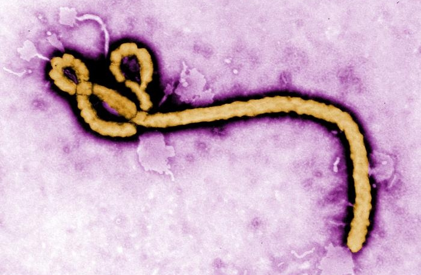

The 2014 Ebola epidemic is one of the largest epidemics in history. The case is related to a man who travelled back from Guinea to Senegal. The CDC is working with other government agencies, health organizations, and international partners to help coordinate technical assistance and control. Most people in America are familiar with the case of Thomas Duncan who travelled to Dallas while he was contagious. Duncan is still in critical condition but so far no new cases after the 50 possible people he could have came in contact with.
